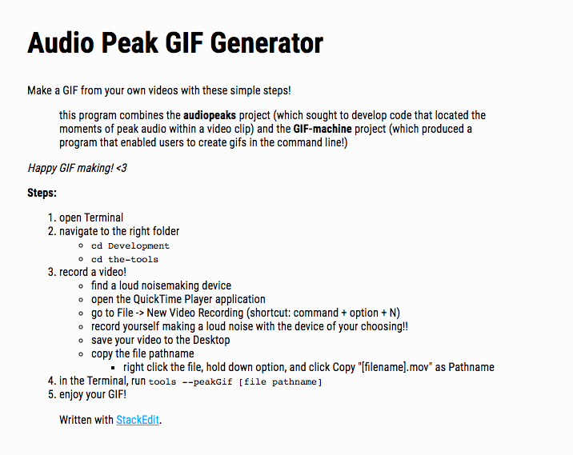

Sophie applied the tool she developed in the Audio Peaks project to create an app for the 2019 Fall Showcase. For this app, different attendees of the Showcase filmed videos with various noisemaking devices around the studio, and the app found the moment of peak audio in that video to generate into a brief GIF. The directions for using the app is laid out here!
